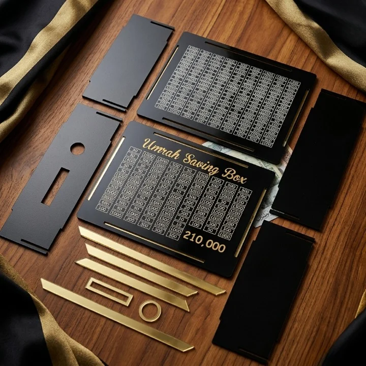

Best Gift Wrapping & Boxes in Faisalabad: Practical Shopping Guide

Looking for the best gift wrapping & boxes in Faisalabad? This practical shopping guide helps you navigate the options available online, focusing on what matters most for everyday use and special occasions. The listings include a range of items, from decorative boxes to bath bombs and perfume testers, though not all align perfectly with traditional gift wrapping categories. While some products serve as packaging alternatives, others are standalone gifts or accessories. This guide highlights key factors to consider, such as quality, design, and delivery options, to help you make informed choices. Whether you're wrapping a gift or looking for unique items, understanding the scope of available products ensures you find the right fit for your needs.
Quick buying check: Match the actual item to your task, check its measurements or compatibility, and compare the full delivered price. Read the listing and policies before you order. The examples below are catalog evidence, not hands-on test results.
Key benefits of choosing Gift Wrapping & Boxes carefully
- Better fit for your task: select the specification or design your situation needs.
- Clearer budget: compare the item, delivery and any required extras together.
- Fewer avoidable returns: resolve missing measurements and compatibility questions before ordering.
- More useful ownership: check how the item will be stored, cleaned and used.
Selection criteria and matching the actual task for Gift Wrapping & Boxes
Selection criteria for gift wrapping and boxes should focus on purpose, material quality, and design. Determine if the items are for daily use, special occasions, or commercial purposes. Check if the materials are durable and suitable for the intended environment. Consider the size and shape to ensure they fit the gifts properly. Look for options that match the occasion’s formality or theme. Avoid overpaying for features not needed. Prioritize practicality and usability over aesthetics alone.
Matching the actual task involves assessing how well the product fulfills its intended use. For example, a box meant for fragile items should have proper cushioning or structure. Evaluate if the wrapping complements the gift’s nature and the recipient’s preferences. Ensure the product aligns with the delivery method and payment options available. Consider how easy it is to assemble or use. Choose items that are reliable and meet the specific needs of the task at hand.
Always verify that the product details match the requirements before purchasing. Check if the dimensions and weight capacity are suitable for the items being wrapped. Confirm that the design and color options are appropriate for the occasion. Ensure that the seller provides clear information about returns, delivery, and customer support. Avoid assumptions about product availability or performance. Make informed choices based on accurate and relevant information.
Fit, dimensions, compatibility or edition checks for Gift Wrapping & Boxes
Fit is crucial when selecting gift wrapping and boxes. Ensure the dimensions match the item you intend to wrap. Measure the gift carefully before purchasing to avoid mismatched sizes. Check if the box or wrapping material can accommodate the item without damage. Some products may have specific size requirements for proper closure or presentation. Always verify the product description for accurate measurements. Consider the shape of the gift, as square or rectangular boxes may not fit round items.
Dimensions play a key role in compatibility. Boxes must fit the item’s shape and size to provide adequate protection. Wrapping materials should be large enough to cover the gift completely. Consider the thickness of the material and how it affects the overall size. Some items may require special handling or additional padding. Confirm that the product’s dimensions align with your needs before making a purchase. Check if the box has enough space for any additional items or accessories.
Compatibility ensures the product works as expected. Check if the wrapping or box is suitable for the type of gift. Some materials may not be ideal for certain items. Verify if the product is designed for the intended use, such as for fragile or bulky items. Ensure the product meets the requirements of the delivery method, especially for online purchases. Confirm that the item is suitable for the intended recipient and occasion. Some wrapping styles may not be appropriate for formal or cultural events.
Quality evidence and limitations of listing claims for Gift Wrapping & Boxes
Quality evidence for listing claims about gift wrapping and boxes in Faisalabad should focus on verified seller ratings, detailed product descriptions, and customer feedback. Look for listings that clearly state material type, dimensions, and usage guidelines. Check if the seller provides clear images and specifications that match the product. Reliable sources such as trusted online marketplaces or local store partnerships can help validate claims. Avoid relying on vague or overly promotional language that lacks concrete details.
Limitations of listing claims often include incomplete information about product quality, delivery timelines, or return policies. Some sellers may not fully disclose details about the materials used or the durability of the items. This can lead to mismatches between expectations and actual products. Always cross-check information with multiple sources, such as user reviews or direct inquiries to the seller. Be wary of listings that lack clear details about size, weight, or compatibility with specific gift types. This helps avoid surprises upon delivery.
Practical advice includes verifying product claims through multiple channels before purchasing. Check if the product aligns with your specific needs, such as the size of the gift or the type of wrapping required. Pay attention to delivery options and return policies, as these can affect the overall experience. Avoid making assumptions about product quality based solely on price or branding. Always read the fine print and ask questions if anything is unclear. This approach ensures a more informed and satisfying shopping experience.
Budget tradeoffs and the full delivered cost for Gift Wrapping & Boxes
Budget tradeoffs in gift wrapping and boxes require careful evaluation of what matters most for your specific needs. Cheaper options may save money upfront but could lead to higher costs over time if they don’t last or don’t meet your requirements. Consider the frequency of use, the type of gifts you wrap, and the occasions for which you need the items.
Full delivered cost includes more than just the product price. Shipping, taxes, and handling fees can add up, especially when shopping online. In Pakistan, delivery charges vary by seller and location, so it’s important to calculate the total cost before finalizing a purchase. Some sellers offer free shipping, which can significantly reduce the overall expense. Be mindful of hidden fees or additional charges that might not be immediately visible. Always review the complete cost breakdown to avoid surprises and make more informed decisions.
Practical shopping involves looking beyond the surface details and focusing on real-world usability. Assess the seller’s reputation, read customer feedback, and check for any limitations in the product description. For gift wrapping and boxes, consider how well they fit your needs in terms of size, design, and durability. Avoid overpaying for features you won’t use. Instead, prioritize what matters most for your situation. This approach helps ensure that your purchase meets your expectations and provides the best value for your money.
Setup, care, storage and useful ownership for Gift Wrapping & Boxes
Setup for gift wrapping and boxes in Faisalabad involves organizing materials in a way that allows easy access during gift preparation. Store items in labeled containers or shelves to maintain order. Keep frequently used items within reach and less common ones in storage. Ensure the workspace is clean and free from dust to preserve the quality of materials. A well-organized setup saves time and reduces stress during gift-giving occasions.
Care for gift wrapping and boxes includes handling them gently to avoid tears or damage. Avoid exposing materials to direct sunlight or moisture, which can cause fading or weakening. When not in use, store items in a cool, dry place away from sharp objects. Regularly inspect for wear and replace damaged items to maintain a polished appearance. Proper care ensures materials remain in good condition for future use.
Storage of gift wrapping and boxes should be in a space that protects them from environmental factors. Use sturdy containers or drawers to keep items secure and prevent crushing. Group similar items together for easier retrieval. Label storage areas clearly to streamline the process. Keeping the storage area tidy helps maintain the integrity of materials and makes them easier to find when needed.
Common mistakes, arrival inspection and returns for Gift Wrapping & Boxes
Common mistakes when purchasing gift wrapping and boxes in Faisalabad include overlooking size compatibility and not verifying material quality. Many buyers fail to check if the dimensions match their needs, leading to unusable products. Always measure the items you plan to wrap and compare with product specifications. Avoid assuming all listings have accurate details, as some may lack proper descriptions. Verify if the seller provides clear images and reliable information to prevent mismatches and dissatisfaction.
Upon arrival, inspect all packages immediately for damage or discrepancies. Open the box in front of the delivery person if possible, and check if the contents match the order. Look for any signs of tampering or wear. If something is missing or damaged, note it on the delivery receipt and contact the seller right away. Delayed inspections can complicate return processes, so act promptly to ensure a smooth resolution.
Returns should be handled according to the seller’s policy. Keep all original packaging and documentation, as some sellers require them for processing. Understand the return window and any restocking fees. If the product is faulty or incorrect, communicate clearly with the seller and follow their instructions. In Pakistan, some online platforms offer hassle-free returns, so check the platform’s guidelines before proceeding. Always retain proof of purchase and communication for reference.
Future changes and responsible shopping decisions for Gift Wrapping & Boxes
Future changes in the gift wrapping and boxes market in Faisalabad may include more eco-friendly materials and digital customization options. Shoppers should look for sustainable choices like recycled paper or biodegradable options. Stay informed about trends by following local suppliers and online reviews. This helps make informed decisions that align with environmental values and long-term needs. Consider the impact of packaging on waste and choose options that can be reused or easily disposed of.
Responsible shopping decisions involve evaluating the full cost beyond the price tag. Consider delivery charges, return policies, and product durability. Compare options from multiple sellers to find the best value. Check for customer feedback on quality and service to avoid disappointments. This approach ensures that purchases meet both practical and ethical standards. Look for sellers with transparent policies and clear product descriptions. Pay attention to details like size, material, and design to avoid mismatches.
Making informed choices starts with understanding personal needs and available options. Assess the size, design, and purpose of the gift wrapping and boxes before purchasing. Look for clear product descriptions and reliable seller ratings. Use the shopping checklist to guide the process and avoid common mistakes. This method supports smarter, more thoughtful buying habits. Check for any additional costs like taxes or shipping fees. Ensure the product fits the intended use and is suitable for the recipient.
A useful buying decision connects your actual task to a clearly described item. A category name, attractive photo or low headline price cannot replace checking what will arrive and whether it fits.
Illustrative Pakistan use cases for Gift Wrapping & Boxes
Illustrative: compare a fixed PKR budget
A parent with a fixed budget in Faisalabad wants to buy gift wrapping supplies for a family event. They compare the listed prices of different boxes and calculate the total cost including delivery fees. They look for options under their budget that offer good value and ensure the delivery time fits their schedule. They also check if the items are suitable for the occasion and if the seller offers a return policy.
Illustrative: check fit for shared home use
A couple in Faisalabad needs gift wrapping boxes that fit their shared home space. They look for compact and durable options that can be stored easily. They check if the boxes are suitable for different types of gifts and if they can be reused. They also consider the design to match their home decor and ensure the boxes are easy to handle for both of them.
Illustrative: plan delivery and arrival inspection
A person in a smaller town in Punjab orders gift wrapping boxes online from Faisalabad. They check the delivery time and cost to ensure the items arrive on time. Upon arrival, they inspect the boxes for any damage and check if the items match the description. They also verify the cash on delivery process and ensure the seller’s return policy is clear in case of any issues.
Comparison and evidence from actual catalog listings
The following listing snapshot was recorded at 2026-11-06 05:30:16 PKT. These are seller-provided descriptions, not independent performance tests. A category label does not confirm that an item suits every task discussed in this guide. Check the linked item for its current price, availability, measurements and included accessories.
| Listed item | Snapshot price | Listing evidence and limits |
|---|---|---|
| Wooden Umrah Saving Box – Premium 210,000 Goal Money Box For Umrah Fund, Elegant Islamic Design Charity And Donation Storage Box | Rs 288 | Listing description: Umrah Saving Box - 280 Days Savings Plan. A beautiful wooden money saving box designed to help you save for Hajj and Umrah. This daily pilgrimage savings tracker features a 280-day challenge layout. Product comes non-assembled. Easy to assemble. Material: Wood. Perfect as a gift for Muslims. Confirm any unspecified detail with the store. |
| Mystic Sage Perfume Tester – Glass Spray Vial - 5ml | Rs 443 | Listing description: A compact perfume tester vial for the "Mystic Sage" fragrance. It features a clear cylindrical glass bottle, a black spray pump with a ribbed collar, and a matching smooth black cap. Confirm any unspecified detail with the store. |
| 1pcs Bath Bombs for Kids Gift Set, Colorful Bath Bomb with Surprise Gift Inside, Ocean Theme Fizzing Tub Fun, Moisturizing Foam for Soft Skin, Cute Toy Filled Bath Time Treat | Rs 443 | Listing description: Make bath time more exciting with Hidden Surprise Bath Bombs for Kids. Each colorful bath bomb fizzes and dissolves in water while revealing a fun hidden surprise inside. Confirm any unspecified detail with the store. |
Delivery and returns: Sasta Milaga currently lists Rs 250 delivery, free above Rs 5,000. Usual estimates are 2-4 working days in major cities and 3-6 elsewhere. Returns can be requested within 7 days; damaged or wrong items return free, while other returns cost Rs 250. Check delivery terms and return terms for current conditions.
Frequently asked questions about Gift Wrapping & Boxes in Pakistan
How do I choose Gift Wrapping & Boxes for my needs?
To choose gift wrapping and boxes, consider the occasion, recipient, and your budget. Look for quality materials and design that match the gift. Check if the product is suitable for the intended use, like daily or special events.
What should I check in the listing before ordering?
Before ordering, review the product description and images carefully. Check for any assembly requirements or additional details. Verify the listed price and available payment options. Confirm the return and delivery policies to understand your options if needed.
How do I compare the full cost in Pakistan?
To compare the full cost, add the listed price and delivery fee. Check if free delivery applies based on the threshold. Consider return fees and any extra charges. Use the provided policy details to calculate total expenses accurately.
How much is Sasta Milaga delivery and how long does it take?
Sasta Milaga currently lists Rs 250 delivery, with free delivery on orders above Rs 5,000. Usual estimates are 2-4 working days in major cities and 3-6 working days elsewhere. Read the linked delivery page for current conditions and allow for your specific address.
Can I return a damaged, wrong or unsuitable item?
The published return window is 7 days after delivery. Damaged or wrong items return free, while other returns carry a Rs 250 fee. Read the linked return policy, keep the packaging and report the issue promptly.
Are the product examples independently tested recommendations?
No. The examples are a dated snapshot of seller-provided catalog listings. We have not independently tested these items or verified customer outcomes. Prices and availability can change. Open each product page, compare the stated specifications with your needs and ask the store about missing details.
Conclusion
The best gift wrapping & boxes in Faisalabad offer a range of options for personal and commercial use, but buyers should be aware of the listing-evidence limits, as no hands-on testing or verified reviews are provided. When shopping, focus on product descriptions, materials, and delivery policies to make informed choices. Consider the delivery fee of PKR 250 and free delivery above PKR 5000, and plan for 2-4 working days in major cities. For returns, note the 7-day window and potential fees. Always check the product details carefully and use the provided links for order and return guidelines to ensure a smooth shopping experience.
Choose with a clear checklist. Browse Gift Wrapping & Boxes and compare current listing details. Read how to order before placing a cash-on-delivery order. Take time to confirm the item fits your needs.
Tags: best gift wrapping & boxes in Faisalabad, gift wrapping & boxes online Pakistan, buy gift wrapping & boxes online, gift wrapping & boxes price in Pakistan, gift wrapping & boxes comparison, gift wrapping & boxes shopping checklist, gift wrapping & boxes cash on delivery, how to choose gift wrapping & boxes for everyday use, what to check before buying gift wrapping & boxes online, compare gift wrapping & boxes with delivery costs in Pakistan, gift wrapping & boxes buying guide for Pakistani families, questions to ask before ordering gift wrapping & boxes with COD